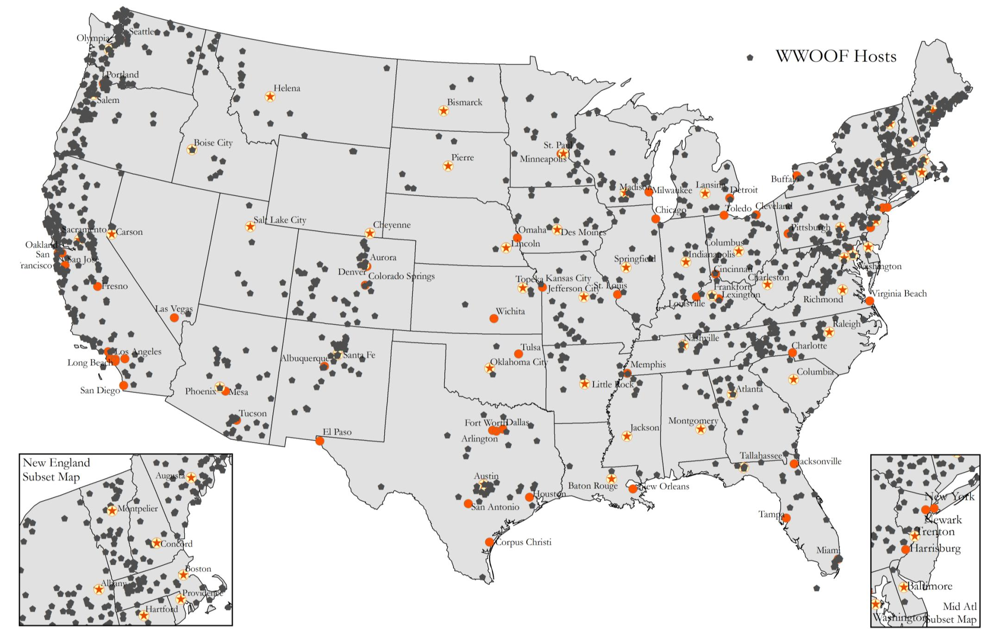
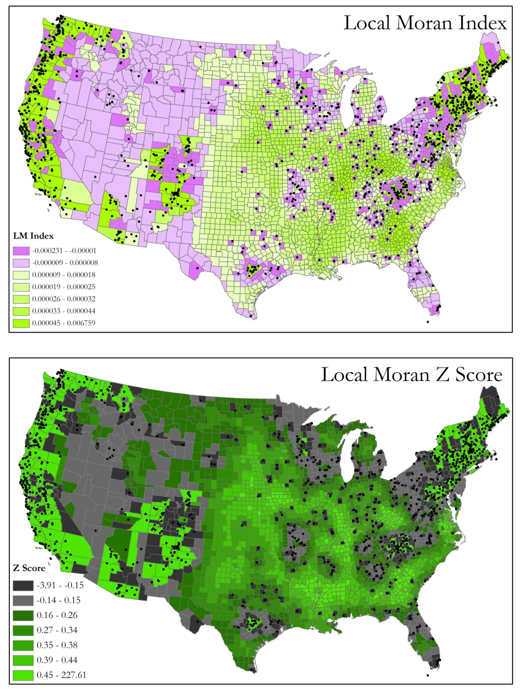
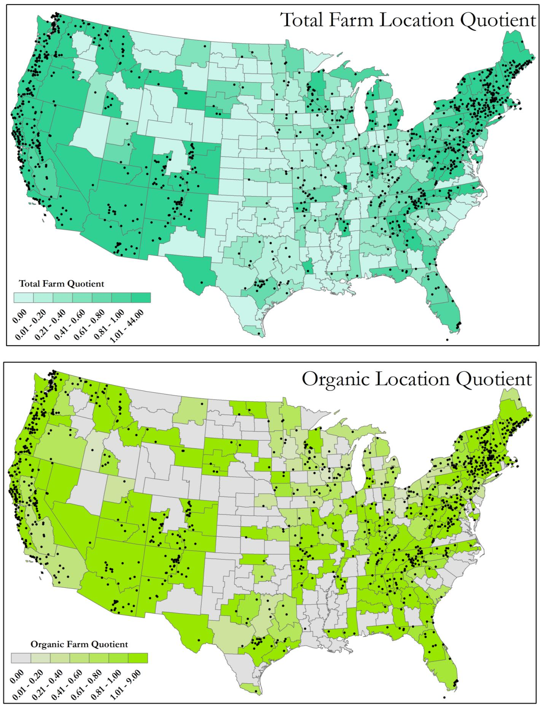
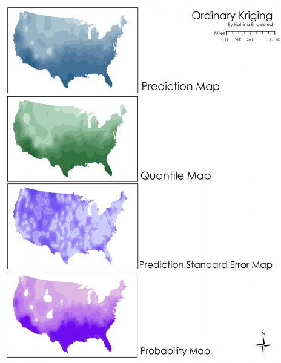
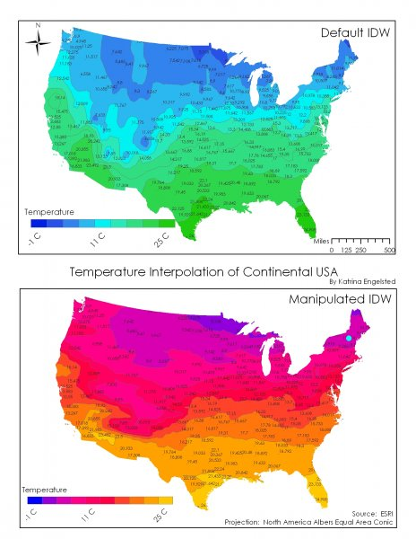

Hi Carlos. I'm Katrina Engelsted — Manny Teodoro shared the WRA listing with me, and the fit is uncanny. I'm a geographer turned data analyst with fifteen years across the National Park Service, a customer data platform, a geospatial-risk startup, and (currently, on the side) founding-advisor work for a small water-utility software startup. Honors thesis used ArcGIS spatial statistics on 1,650 farm-host locations across the U.S. I'm looking for a senior full-time analyst role where the GIS + R + dashboard toolkit can support real conservation and demand-modeling work — and MWM is exactly that.
Founding technical advisor (part-time, pre-revenue) at Upstream AI. Two live pilots with Colorado water systems. I know SDWA, monthly reports, regulator-facing prose, and what "non-revenue water" looks like when it's a guy named Dale chasing a leak.
Regression of WWOOF host locations against amenity, demographic, and Bohemian indices. Twelve field interviews to ground-truth the model. Plus three years building cartography for the National Park Service.
RStudio for data analysis (MTech, Springboard 2024). Excel + Power BI for client-facing reporting. Snowflake-style warehousing at Upstream. Comfortable shipping reproducible notebooks and dashboards both.
I document assumptions, version my work, and translate findings for both operators and non-technical clients. Detail-oriented without being pedantic. The kind of analyst senior PMs trust with the final deliverable.
"A Network of Alternative Economies" — an exploratory spatial study of every WWOOF host farm in the continental U.S. I built the host-location dataset, joined it to county-level demographic and amenity indices, and ran regressions in ArcGIS to figure out why hosts are clustered where they are.
The relevant part for MWM: this is the same methodological shape as an AMI assessment — locate the data, clean it, test hypotheses, ground-truth with the people on the ground, write it up for an audience that doesn't speak statistics.





Upstream AI is an early-stage operations platform for the 1-to-5-person utilities that serve rural Colorado towns. I joined as founding technical advisor in 2024 — it's pre-revenue, part-time, and structured so I can step back to a purely advisory role for the right full-time analyst position. (Translation: this isn't a scheduling conflict.)
I do product, engineering, and pilot conversations. So in the last two years I've absorbed the actual texture of utility data work — what monthly operating reports look like, what SDWA compliance prep involves, why "human-in-the-loop" isn't a UX preference but a regulatory baseline, and what utility staff actually need from software (hint: not another dashboard nobody opens).
For MWM's AMI work specifically: my pilot utilities are too small for AMI today — but I've sat with operators reviewing manual meter reads, chasing apparent vs. real losses, and trying to explain consumption spikes to angry homeowners. I already know the customer your clients serve.
The JD lists three buckets: AMI data analysis, demand modeling, and additional research / GIS / training support. Here's one concrete example from my career for each of the six core responsibilities — so you can see what "yes I've done that" looks like in practice.
For Sunlight Mtn Retail I cleaned a year of messy POS data, restructured an inconsistent product taxonomy, and ran EDA in pandas / R. That's the same methodological shape as an AMI assessment — clean noisy interval data, classify it, surface anomalies, write it up.
Built rule-based and statistical outlier detection over the cleaned data to surface mis-priced and dead-stock SKUs. Same pattern that distinguishes "leak / continuous use / meter error" in AMI data — just with skis and bikes instead of cubic meters per day.
For Upstream's pilot rollouts I audit every input dataset and assumption — service-area boundaries, customer counts, billing categories. Same QA/QC instinct that keeps a DSS Model defensible when a client asks "where does this number come from?"
At NPS I built custom dashboards for park GIS staff. At Lytics I built segment-reporting views for enterprise clients. At Upstream I build Supabase + Recharts dashboards for pilot operators. I default to making the invisible visible — for technical and non-technical audiences both.
Three years of GIS cartography for the National Park Service, plus a published spatial-statistics thesis on host-farm distribution. I can run a turf inventory, build a water-budget map, or join Census + parcel data without breaking a sweat — and I know what makes a map land for a non-GIS audience.
Contributed to LearnOSM, the Humanitarian OpenStreetMap Team's training curriculum, translated into 23+ languages. Now I run monthly pilot-operator trainings at Upstream. Comfortable preparing handouts, running webinars, and turning technical findings into things normal humans can use.
Manny Teodoro doesn't share job listings lightly. When he sent me the WRA opening I read the JD three times and recognized it immediately — MWM sits at the intersection of three things I already care about: water sustainability, rigorous analytics, and the kind of small-firm culture where the work actually has a face attached to it.
I've spent the last two years advising the team building software for the 1-to-5-person utilities that nobody else builds for. MWM is on the consulting side of that same world — helping the agencies and water suppliers above my pilots plan, forecast, and conserve at scale. That's directly upstream (forgive the pun) of the work I've been adjacent to.
I'm available full-time. My Upstream role is part-time and structured so I can step back to a purely advisory commitment for the right full-time analyst seat. Based in Boulder, work remotely well, happy to discuss specifics.
Four signals that I'm not just pattern-matching on a job title:
I'd love a 30-minute call to walk through how I'd actually approach my first 90 days on a WRA workload — which utilities I'd want to shadow, which datasets I'd want to see, and which of MWM's existing methodologies I'd want to learn first.